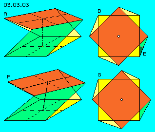
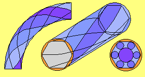
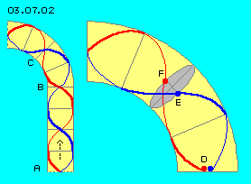
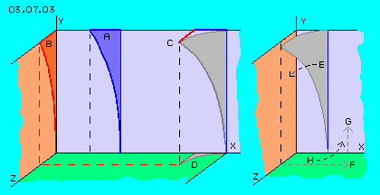
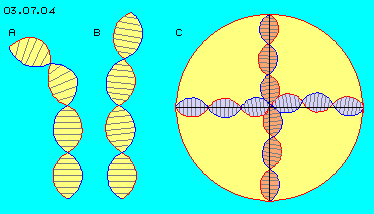

| Alfred Evert | 29.04.2004 |
03.07. Bending and Winding

A motion can only occur, if the upper and lower faces are twisted more or less, while same time inevitably all surfaces become differently inclined. The central axis though several of these cubes becomes bended.
This possibility of movements was demonstrated by picture 03.03.03. It´s reported the aether should be ´as hard as steel´ (in order to transport light). If this cube would be build by steel-rods, this grid would allow corresponding movements (by minimum flexibility within joints). In general however, this first deduction of local movements is too ´stiff´.
Potential-Twist-Pipe Following picture demonstrates the essential aspects of this invention.
The common shape of flux within pipes represents a self-blocking system. Especially large losses of throughput are based on commonly used bows of pipes. The inner curve is shorter than outer curve, so inevitably comes up turbulent flux, i.e. movement ahead is reduced decisively.

An optimum flow e.g. is achieved by a six-edge pipes with rounded edges and the whole pipe is twisted around its longitudinal axis. Within the edges come up cylindrical side-flows, at which the central flow rolls forward like at ´ball bearings´. The main stream has no direct contact to the wall, thus practically without any friction is moving forward - also through the bows (resp. just there comes up an optimum shape of potential-twist-flow). I called this invention ´Potential-Twist-Pipes´.
Tilting Water Surface
At B these water molecules start moving into the left-turning bow. The red curve at first runs at the bow´s inner side, thus is some shorter than the corresponding section of the blue curve at outer side of the bow. At second part of the bow, the relations are vice versa, so at the end of the bow both water molecules did run ways of likely length.

At the start of the bow, the ´water surface´ between both molecules is cross to the pipe (right angles to longitudinal axis). At the middle of the bow however, this water surface (marked grey) is tilted versus the longitudinal axis. So during the movement through the bow, the water surface ´slops´ to and fro even by this optimum shape of flux. This motion could be avoided (and thus could be achieved real steady motions) only if the bow is not bended only towards one side but would show a spiral shape into two directions same time.
No Comparison
Here however, the aether is assumed to be gapless coherent unit, without any space between parts, so the aetherpoints stick to their neighbours all times. Within the aether, one point can not rotate around an axis, like the water molecules here are ´dancing´ around the longitudinal axis of the pipe. The aetherpoints keep same side of neighbours all times, they can only swing parallel to each other, by more or less speeds.
So this comparison could only point out, each bending - also of fluid particles - synchronously demands tilting right angled: here the longitudinal axis is bended to left side and resulting of is a tilting backside-up and frontside-down of the water surface. So this inevitable synchronization of movements into two directions right angled to each other, not only exists at previous ´steel-grid´ construction (of that twisted cube), but also within liquids and gases.
A grave difference however is, material parts can wander through space long distances, e.g. water can flow through previous pipe or within rivers for thousands of kilometres or air can run around whole globe. The aether however is ´locally resting´ resp. is swinging only at relative limited areas, the whole Free Aether only at quant-small Universal Aethermovement, the Bounded Aether only within locally limited ´Potential-Vortex-Clouds´. So local aether movements are not to compare with flowing water through previous pipe.
Right Angles 
By previous considerations, that ´tube´ is to bend only if same time it´s bended right angles to this direction. This second bending within the Z-plane here at B shows forwards, thus right angled to first bending.
At C is shown the addition of both bends. As the bending increases from bottom to top, a spiral line results as a curve bended same time into the third dimension, as marked at D.
This three-dimensional bending (from original vertical straight connecting line to the grey 3D-curve is drawn once more at this picture at right side. The bending results a shorter distance between the X-axis and the upper end of the curve. The process of this bending thus is result of synchronous movement towards left-ahead-down, like marked at E. However the bending as a side affect no results an other change: at the inner side of the curve now is ´too much aether´, while at the outer side of the curve is ´too less aether´.
Thus in principle, same time the aether must move off the Z-axis towards right side (F) and some aether has to move from X-axis up (G). Again both movements are done synchronously at a spiral track towards right-back-upwards, as marked at H.
Within the gapless aether a spiral first movement (E) thus can only occur, if again by right angles a second balancing spiral movement (H) occurs same time. This necessity of balancing movements, e.g. at previous chapter was recognized and discussed as swinging movement around the vertical axis.
No single aetherpoint can move without synchronous motion of other aetherpoints, at the one hand by analogue motions of direct neighbours, at the other hand by balancing movements of neighbours rather far, at any case at spiral tracks, at any case by motions right angled to each other. No single aetherpoint of these Potential-Vortex-Clouds is to stop, without all points of total motion system being involved.
Double-Helix

At this picture at B is shown e.g. how that ´elastic tube´ could change its shape. As mentioned above, the distances between starting- and end-points varies depending on the bends. As also mentioned above, each bending can occur only into two directions same time. Lastly it becomes obvious, near ´nodes´ the areas become more narrow or wide, thus previous balancing motions are demanded in addition.
At the considerations of previous chapters the connecting lines were simply drawn as straight lines or simply bended curves. Naturally within the aether are to observe also the neighbours straight line. However, only the neighbours of bended lines do similar motions.
At this picture at C, as an example is drawn a Potential-Vortex-Cloud (yellow marked sphere) with connecting lines in shape of double helix.
The central aetherpoint again is some upward-right from the coordinate zero-point. The connecting line to right side thus shows a ´hill´ while left side shows some depression. Also corresponding to previous chapter, here is drawn a vertical ´tumbling axis´ with its balancing swinging motions.
Loops and Eyes
At earlier chapter ´Overlays´ was mentioned e.g. by picture 03.02.03 which variety of movement pattern can results from the overlaying of only two circled motions, only by varying turning speeds or turning directions and radius.
So the connecting lines from Free Aether to the centre probably won´t take most short way but will build loops or even ´eyes´ (e.g. like at rope turned unsteady or e.g. one can see at ´trunk´ of tornados resp. water vortices). It´s also quite sure, the connecting lines from the centre to different directions of the periphery are rather different resp. neighbouring aetherpoints at comparable positions within the Potential-Vortex-Cloud must not and will not behave same kind.
Common to all Local Aethermovements is only that principle of movements within Potential-Vortex-Clouds: at the centre exists most intensive swinging motion, towards outwards the motions become weaken. All movements occur synchronously into three dimensions same time. ´Astronomic´ large balancing areas are demanded (up to the relation of one to millions). Within this general movement pattern no total symmetry exists, opposite each Potential-Vortex-Cloud will be really an individual.
At earlier chapter ´Volumes and Shapes´ was discussed the general possibility of local aether movement by the example of a cube. The lower and upper faces of the cube were shifted by 45 degree, the edges between show diagonal, also by some 45 degrees.
At the other hand, the aether was often compared with a fluids and flows within. I made intensive researches concerning these problems at my ´Fluid-Technology´, developing e.g. a special shape of pipes.
At picture 03.07.02 the twisted spiral tracks (red and blue) are shown once more. Cross-lines mark each 90 degree of turning around the longitudinal axis. The sections of tracks at front side are drawn thick, the sections at the background are drawn by thin curves. Tracks like these resp. all molecules moving these ways, in general are called ´flow-threads´, thus comparable to the term ´connecting line´ used here.
The comparison of water and its flux with the aether and its possibilities of movements does not fit by diverse points. Water is material occurrence and exists by parts. Within ´flux-threads´, the water molecules are neighboured and do likely or analogue motions. Between water molecules is ´nothing´ (by common understanding), so the whole flux-threads can shift alongside each other without problems. So previous water surface can tilt, some water molecules can run ahead and some molecules stay simply behind.
Long times after I had developed the idea of the Spiral-Cluster-Tracks of the Universal Aethermovement, I recognized the striking likeness to the cluster structure of DNA. Previous spiral tracks of both observed water molecules with their twisted motions now remember at the winded band of DNA.
This picture won´t claim, the movements within a Potential-Vortex-Clouds will run by the double helix pattern. This picture however well visualizes, the swinging of connecting lines not at all will occur at only simple spiral curves but well can show overlays of diverse circled motions.
03.09. Movement´s Drive
Aether-Physics and -Philosophy